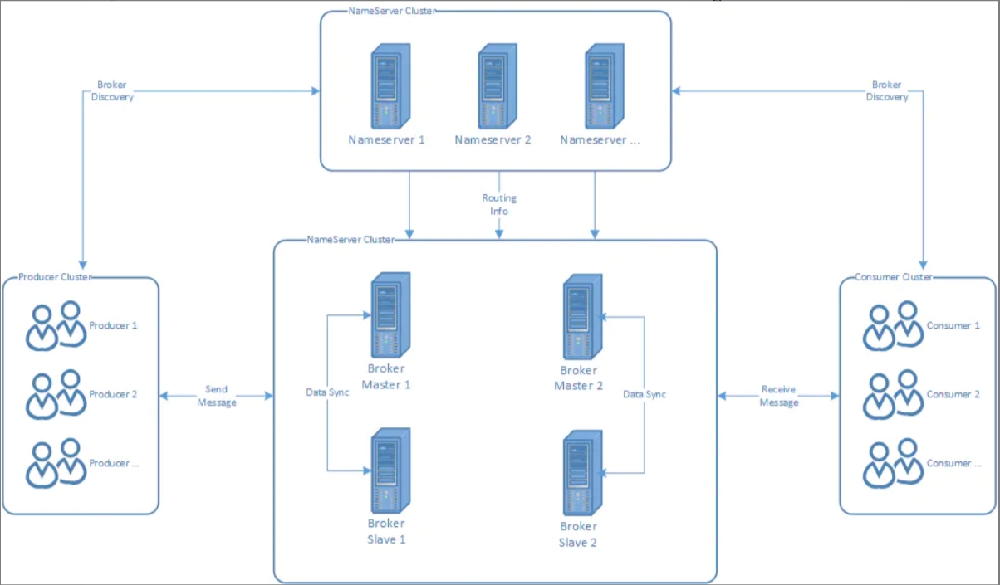
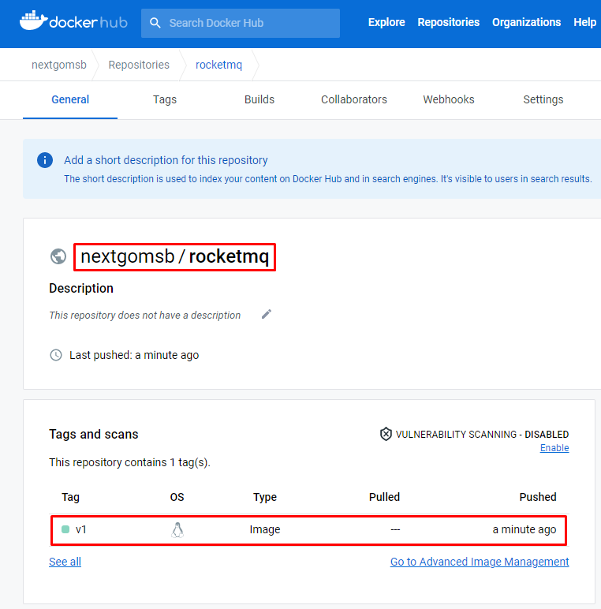
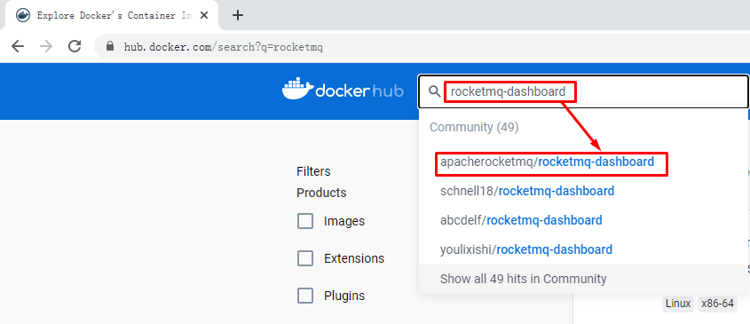
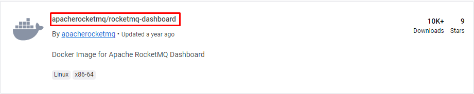
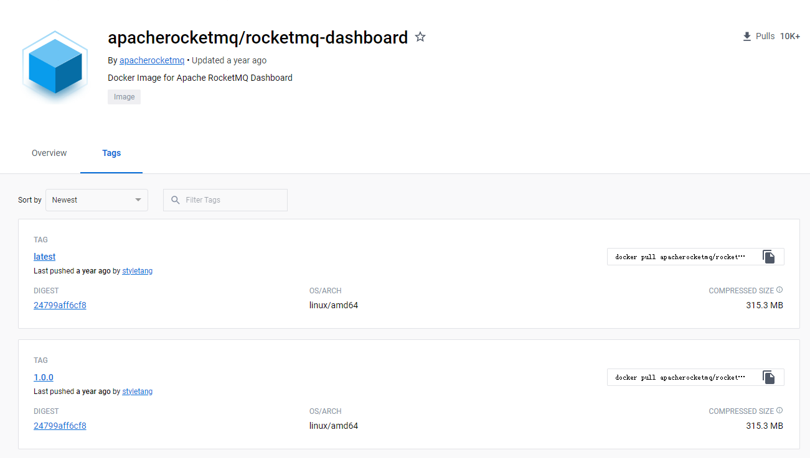
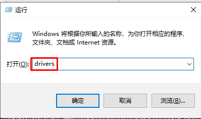
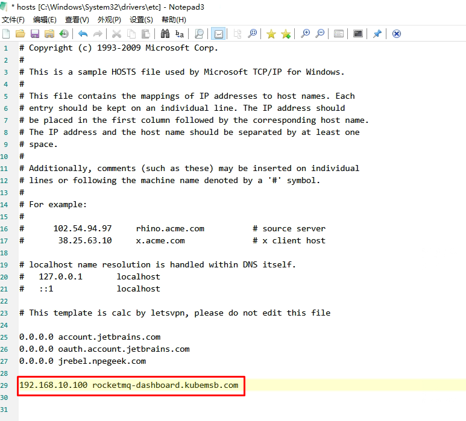
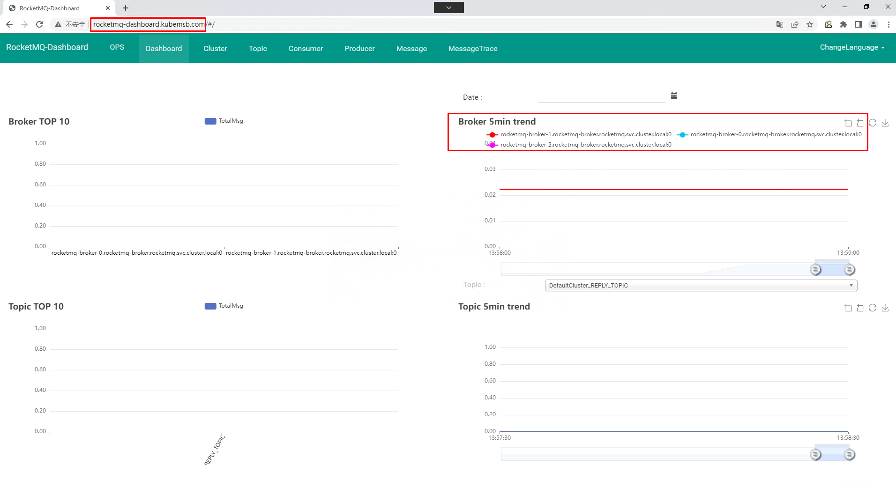
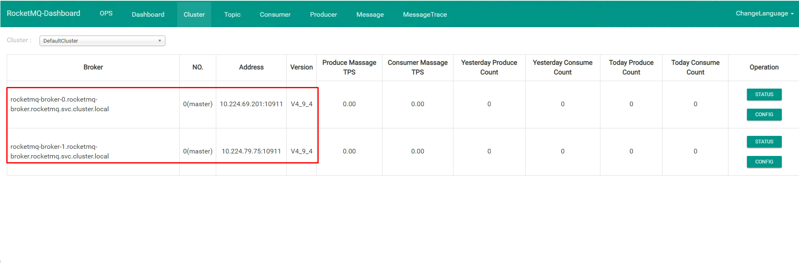
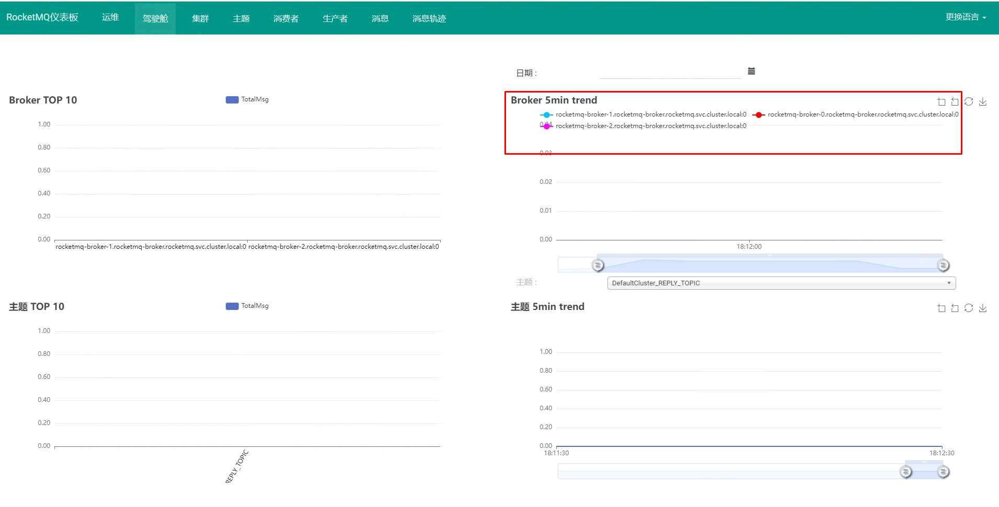

rocketmq部署¶
一、rokectmq介绍¶
Apache RocketMQ是一个分布式消息传递和流媒体平台，具有低延迟、高性能和可靠性、万亿级别的容量和灵活的可伸缩性。
二、rokectmq特性¶
-
发布/订阅消息传递模型
-
定期消息传递
-
按时间或偏移量进行消息回溯
-
日志中心流
-
大数据集成
-
在同一队列中可靠的FIFO和严格的有序消息传递
-
有效的拉伸消费模式
-
在一个队列中有百万级的消息积累容量
-
多种消息传递协议，如JMS和OpenMessaging
-
灵活的分布式扩展部署体系结构
-
快速批量消息交换系统。
-
各种消息过滤机制，如SQL和标记
-
用于隔离测试和云隔离集群的Docker映像。
-
用于配置、度量和监视的功能丰富的管理仪表板
三、使用rocketmq理由¶
- 强调集群无单点，可扩展，任意一点高可用，水平可扩展
方便集群配置，而且容易扩展（横向和纵向），通过slave的方式每一点都可以实现高可用
- 支持上万个队列，顺序消息
顺序消费是实现在同一队列的，如果高并发的情况就需要队列的支持，rocketmq可以满足上万个队列同时存在
- 任性定制你的消息过滤
rocketmq提供了两种类型的消息过滤，也可以说三种可以通过topic进行消息过滤、可以通过tag进行消息过滤、还可以通过filter的方式任意定制过滤
- 消息的可靠性（无Buffer，持久化，容错，回溯消费）
消息无buffer就不用担心buffer回满的情况，rocketmq的所有消息都是持久化的，生产者本身可以进行错误重试，发布者也会按照时间阶梯的方式进行消息重发，消息回溯说的是可以按照指定的时间进行消息的重新消费，既可以向前也可以向后（前提条件是要注意消息的擦除时间）
- 海量消息堆积能力，消息堆积后，写入低延迟
针对于provider需要配合部署方式，对于consumer，如果是集群方式一旦master返现消息堆积会向consumer下发一个重定向指令，此时consumer就可以从slave进行数据消费了
- 分布式事务
rocketmq对这一块说的不是很清晰，而且官方也说现在这块存在缺陷（会令系统pagecache过多），所以线上建议还是少用为好
- 消息失败重试机制
针对provider的重试，当消息发送到选定的broker时如果出现失败会自动选择其他的broker进行重发，默认重试三次，当然重试次数要在消息发送的超时时间范围内。
针对consumer的重试，如果消息因为各种原因没有消费成功，会自动加入到重试队列，一般情况如果是因为网络等问题连续重试也是照样失败，所以rocketmq也是采用阶梯重试的方式。
- 定时消费
除了上面的配置，在发送消息是也可以针对message设置setDelayTimeLevel
- 活跃的开源社区
现在rocketmq成为了apache的一款开源产品，活跃度也是不容怀疑的
- 成熟度
经过双十一考验
四、rocketmq核心概念¶
- NameServer
这里我们可以理解成类似于zk的一个注册中心，而且rocketmq最初也是基于zk作为注册中心的，现在相当于为rocketmq自定义了一个注册中心，代码不超过1000行。RocketMQ 有多种配置方式可以令客户端找到 Name Server, 然后通过 Name Server 再找到 Broker，分别如下，优先级由高到低，高优先级会覆盖低优先级。客户端提供http和ip:端口号的两种方式，推荐使用http的方式可以实现nameserver的热部署。
- Push Consumer
Consumer 的一种，应用通常通过 Consumer 对象注册一个 Listener 接口，一旦收到消息，Consumer 对象立刻回调 Listener 接口方法，类似于activemq的方式
- Pull Consumer
Consumer 的一种，应用通常主动调用 Consumer 的拉消息方法从 Broker 拉消息，主动权由应用控制
- Producer Group
一类producer的集合名称，这类producer通常发送一类消息，且发送逻辑一致
- Consumer Group
同上，consumer的集合名称
- Broker
消息中转的角色，负责存储消息（实际的存储是调用的store组件完成的），转发消息，一般也称为server，同jms中的provider
- Message Filter
可以实现高级的自定义的消息过滤
- Master/Slave
集群的主从关系，broker的name相同，brokerid=0的为主master，大于0的为从slave，可以一主多从，但一从只能有一主
五、rocketmq角色¶
RocketMQ由四部分构成：Producer、Consumer、Broker和NameServer
启动顺序：NameServer->Broker
为了消除单点故障，增加可靠性或增大吞吐量，可以在多台机器上部署多个nameserver和broker，并且为每个broker部署1个或多个slave

Topic & message queue：一个分布式消息队列中间件部署好以后，可以给很多个业务提供服务，同一个业务也有不同类型的消息要投递，这些不同类型的消息以不同的 Topic 名称来区分。所以发送和接收消息前，先创建topic，针对某个 Topic 发送和接收消息。有了 Topic 以后，还需要解决性能问题 。 如果一个Topic 要发送和接收的数据量非常大， 需要能支持增加并行处理的机器来提高处理速度，这时候一个 Topic 可以根据需求设置一个或多个 Message Queue, Message Queue 类似分区或 Partition 。Topic有了多个 Message Queue 后，消息可以并行地向各个Message Queue 发送，消费者也可以并行地从多个 Message Queue 读取消息并消费 。
六、rocketmq集群部署方式¶
- 单Master模式
只有一个 Master节点
优点：配置简单，方便部署
缺点：这种方式风险较大，一旦Broker重启或者宕机时，会导致整个服务不可用，不建议线上环境使用
- 多Master模式
一个集群无 Slave，全是 Master，例如 2 个 Master 或者 3 个 Master
优点：配置简单，单个Master 宕机或重启维护对应用无影响，在磁盘配置为RAID10 时，即使机器宕机不可恢复情况下，由与 RAID10磁盘非常可靠，消息也不会丢（异步刷盘丢失少量消息，同步刷盘一条不丢）。性能最高。
缺点：单台机器宕机期间，这台机器上未被消费的消息在机器恢复之前不可订阅，消息实时性会受到受到影响
- 多Master多Slave模式（异步复制）
每个 Master 配置一个 Slave，有多对Master-Slave， HA，采用异步复制方式，主备有短暂消息延迟，毫秒级。
优点：即使磁盘损坏，消息丢失的非常少，且消息实时性不会受影响，因为Master 宕机后，消费者仍然可以从 Slave消费，此过程对应用透明。不需要人工干预。性能同多 Master 模式几乎一样。
缺点： Master 宕机，磁盘损坏情况，会丢失少量消息。
- 多Master多Slave模式（同步双写）
每个 Master 配置一个 Slave，有多对Master-Slave， HA采用同步双写方式，主备都写成功，向应用返回成功。
优点：数据与服务都无单点， Master宕机情况下，消息无延迟，服务可用性与数据可用性都非常高
缺点：性能比异步复制模式略低，大约低 10%左右，发送单个消息的 RT会略高。目前主宕机后，备机不能自动切换为主机，后续会支持自动切换功能
七、rocketmq集群部署¶
rocketmq-operator都是不能很灵活的调整副本数，毕竟每个副本对应其唯一的配置的文件，不同的broker实例使用的配置文件都是不一样的，都存在差异，一旦副本变化了，就不能很好的和broker 的配置文件内容一 一对应起来。
接下来我们创建一个基于k8s部署单master以及多master部署rocketmq集群，并且只需要一个broker配置文件，多个broker实例会自动基于该broker配置文件模板，自动生成不同broker实例的broker配置文件，扩容或者伸缩rocketmq集群 nameserver或者broker副本数的时候不需要理会配置文件，仅仅是调整实例的副本即可。
备注：该方案不适合有slave节点的部署方式。
7.1 环境说明¶
- 提供持久存储动态供给功能
[root@k8s-master01 ~]# kubectl get storageclass
NAME PROVISIONER RECLAIMPOLICY VOLUMEBINDINGMODE ALLOWVOLUMEEXPANSION AGE
nfs-client fuseim.pri/ifs Delete Immediate false 8d
- 提供metallb功能
按官网提供的方式修改即可，链接：https://metallb.universe.tf/
# kubectl apply -f https://raw.githubusercontent.com/metallb/metallb/v0.13.5/config/manifests/metallb-native.yaml
# vim ippool.yaml
# cat ippool.yaml
apiVersion: metallb.io/v1beta1
kind: IPAddressPool
metadata:
name: first-pool
namespace: metallb-system
spec:
addresses:
- 192.168.10.100-192.168.100.110
# kubectl create -f ippool.yaml
# vim l2.yaml
# cat l2.yaml
apiVersion: metallb.io/v1beta1
kind: L2Advertisement
metadata:
name: example
namespace: metallb-system
# kubectl create -f l2.yaml
- 提供ingress nginx controller
# wget https://raw.githubusercontent.com/kubernetes/ingress-nginx/controller-v1.4.0/deploy/static/provider/cloud/deploy.yaml
部署前修改362行,把Local修改为Cluster
# kubectl apply -f deploy.yaml
# kubectl get ns
NAME STATUS AGE
ingress-nginx Active 8s
# kubectl get pods -n ingress-nginx
NAME READY STATUS RESTARTS AGE
ingress-nginx-admission-create-r9gqt 0/1 Completed 0 62s
ingress-nginx-admission-patch-r24d6 0/1 Completed 0 62s
ingress-nginx-controller-7844b9db77-mxrgn 1/1 Running 0 62s
# kubectl get svc -n ingress-nginx
NAME TYPE CLUSTER-IP EXTERNAL-IP PORT(S) AGE
ingress-nginx-controller LoadBalancer 10.96.21.124 192.168.10.100 80:31844/TCP,443:32294/TCP 49m
ingress-nginx-controller-admission ClusterIP 10.109.18.235 <none> 443/TCP 49m
- 容器镜像仓库
没有本地容器镜像仓库，可以使用hub.dockcer.com。
7.2 构建rocketmq镜像¶
rocketmq-namesrv和 rocketmq-broker共用同一个镜像，仅仅是启动命令和启动参数不一样，后期可灵活的通过调整启动命令和启动参数来实现不同的效果（比如通过挂载configMap的方式自定义rocketmq的配置文件，而不需要重建rocketmq的镜像。
# vim Dockerfile
# cat Dockerfile
FROM docker.io/library/openjdk:8u102-jdk AS JDK
LABEL mail=admin@kubemsb.com
RUN rm -vf /etc/localtime \
&& ln -s /usr/share/zoneinfo/Asia/Shanghai /etc/localtime \
&& echo "Asia/Shanghai" > /etc/timezone \
&& export LANG=zh_CN.UTF-8
RUN curl -k https://mirrors.tuna.tsinghua.edu.cn/apache/rocketmq/4.9.4/rocketmq-all-4.9.4-bin-release.zip \
-o /tmp/rocketmq-all-4.9.4-bin-release.zip \
&& unzip /tmp/rocketmq-all-4.9.4-bin-release.zip -d /tmp/ \
&& mv /tmp/rocketmq-all-4.9.4-bin-release /opt/rocketmq \
&& rm -rf /tmp/*
RUN sed -ir '/-Xmx/c JAVA_OPT=${JAVA_OPT}' /opt/rocketmq/bin/runserver.sh \
&& sed -ir '/-Xmx/c JAVA_OPT=${JAVA_OPT}' /opt/rocketmq/bin/runbroker.sh
## 运行 MQ 应用时候可以通过环境变量设置 jvm 数值，如：JAVA_OPT="-server -Xms2g -Xmx2g -XX:MetaspaceSize=128m -XX:MaxMetaspaceSize=320m"
ENV ROCKETMQ_HOME=/opt/rocketmq
WORKDIR $ROCKETMQ_HOME
# docker build -t docker.io/nextgomsb/rocketmq:v1 . --no-cache
# docker images
REPOSITORY TAG IMAGE ID CREATED SIZE
nextgomsb/rocketmq v1 ed01df462eb3 31 seconds ago 677MB
# docker login
Login with your Docker ID to push and pull images from Docker Hub. If you don't have a Docker ID, head over to https://hub.docker.com to create one.
Username: nextgomsb 替换为自己仓库的用户名
Password: 替换为自己仓库的用户名
WARNING! Your password will be stored unencrypted in /root/.docker/config.json.
Configure a credential helper to remove this warning. See
https://docs.docker.com/engine/reference/commandline/login/#credentials-store
Login Succeeded
# docker push docker.io/nextgomsb/rocketmq:v1

7.3 获取rocketmq-dashboard镜像¶
rocketmq-dashboard是一个可视化的rocketmq集群运维监控工具。



7.4 rocketmq部署描述文件编写¶
7.4.1 rocketmq-namesrv部署描述文件¶
# vim rocketmq-namesrv.yaml
# cat rocketmq-namesrv.yaml
---
apiVersion: v1
kind: Namespace
metadata:
name: rocketmq
---
apiVersion: apps/v1
kind: StatefulSet
metadata:
name: rocketmq-namesrv
namespace: rocketmq
spec:
serviceName: rocketmq-namesrv
replicas: 2
selector:
matchLabels:
app: rocketmq-namesrv
template:
metadata:
labels:
app: rocketmq-namesrv
spec:
containers:
- name: rocketmq-namesrv-container
image: docker.io/nextgomsb/rocketmq:v1
imagePullPolicy: IfNotPresent
command:
- bin/mqnamesrv
env:
- name: JAVA_OPT
value: -server -Xms2g -Xmx2g -XX:MetaspaceSize=256m -XX:MaxMetaspaceSize=512m
---
apiVersion: v1
kind: Service
metadata:
name: rocketmq-namesrv
namespace: rocketmq
labels:
app: rocketmq-namesrv
spec:
ports:
- port: 9876
protocol: TCP
targetPort: 9876
selector:
app: rocketmq-namesrv
type: ClusterIP
# dig -t a rocketmq-namesrv.rocketmq.svc.cluster.local. @10.96.0.10
7.4.2 rocketmq-broker部署描述文件¶
# vim rocketmq-broker.yaml
# cat rocketmq-broker.yaml
---
apiVersion: apps/v1
kind: StatefulSet
metadata:
name: rocketmq-broker
namespace: rocketmq
spec:
serviceName: rocketmq-broker
replicas: 2
selector:
matchLabels:
app: rocketmq-broker
template:
metadata:
labels:
app: rocketmq-broker
spec:
containers:
- name: rocketmq-broker
image: nextgomsb/rocketmq:v1
imagePullPolicy: IfNotPresent
command:
- bin/mqbroker
- --namesrvAddr=rocketmq-namesrv.rocketmq.svc.cluster.local.:9876
env:
- name: JAVA_OPT
value: -server -Xms1g -Xmx1g
dnsPolicy: ClusterFirst
restartPolicy: Always
schedulerName: default-scheduler
terminationGracePeriodSeconds: 30
updateStrategy:
rollingUpdate:
partition: 0
type: RollingUpdate
7.4.3 rocketmq-dashboard部署描述文件¶
部署一个能实现运维监控rocketmq的可视化web应用。
部署rocketmq-dashboard应用时候重点关注部署文件里面的env环境变量参数JAVA_OPTS，该env环境变量（JAVA_OPTS）决定了应用是否能成功连接到 rocketmq-namesrv 服务。
# vim rocketmq-dashboard.yaml
# cat rocketmq-dashboard.yaml
---
apiVersion: apps/v1
kind: Deployment
metadata:
name: rocketmq-dashboard
namespace: rocketmq
labels:
app: rocketmq-dashboard
spec:
replicas: 1
selector:
matchLabels:
app: rocketmq-dashboard
template:
metadata:
labels:
app: rocketmq-dashboard
spec:
containers:
- name: rocketmq-dashboard
image: apacherocketmq/rocketmq-dashboard:latest
imagePullPolicy: IfNotPresent
env:
- name: JAVA_OPTS
value: -Drocketmq.namesrv.addr=rocketmq-namesrv.rocketmq.svc.cluster.local.:9876
dnsPolicy: ClusterFirst
restartPolicy: Always
schedulerName: default-scheduler
securityContext: {}
terminationGracePeriodSeconds: 30
---
apiVersion: v1
kind: Service
metadata:
name: rocketmq-dashboard
namespace: rocketmq
labels:
app: rocketmq-dashboard
spec:
ports:
- port: 8080
protocol: TCP
targetPort: 8080
selector:
app: rocketmq-dashboard
type: ClusterIP
7.5 执行部署描述文件¶
7.5.1 rocketmq-namesrv部署¶
# kubectl create -f rocketmq-namesrv.yaml
# kubectl get pods -n rocketmq
NAME READY STATUS RESTARTS AGE
...
rocketmq-namesrv-0 1/1 Running 0 14m
rocketmq-namesrv-1 1/1 Running 0 13m
7.5.2 rocketmq-broker部署¶
# kubectl create -f rocketmq-broker.yaml
# kubectl get pods -n rocketmq
NAME READY STATUS RESTARTS AGE
rocketmq-broker-0 1/1 Running 0 4m16s
rocketmq-broker-1 1/1 Running 0 4m15s
7.5.3 rocketmq-dashboard部署¶
# kubectl create -f rocketmq-dashboard.yaml
# kubectl get pods -n rocketmq
NAME READY STATUS RESTARTS AGE
rocketmq-dashboard-f4ccdf496-sv984 1/1 Running 0 73s
7.6 调整副本¶
调整rocket-namesrv副本数
kubectl scale sts rocketmq-namesrv --replicas=3 -n rocketmq
# kubectl get pods -n rocketmq
NAME READY STATUS RESTARTS AGE
rocketmq-namesrv-0 1/1 Running 0 15m
rocketmq-namesrv-1 1/1 Running 0 14m
rocketmq-namesrv-2 1/1 Running 0 4s
调整rocket-broker副本数,集群节点内存要大于副本数中内存。
kubectl scale sts rocketmq-broker --replicas=3 -n rocketmq
7.7 创建ingress资源对象实现域名访问dashboard¶
# vim rocketmq-dashboard-ingress.yaml
# cat rocketmq-dashboard-ingress.yaml
apiVersion: networking.k8s.io/v1
kind: Ingress
metadata:
name: ingress-rocketmq-dashboard #自定义ingress名称
namespace: rocketmq
annotations:
ingressclass.kubernetes.io/is-default-class: "true"
kubernetes.io/ingress.class: nginx
spec:
rules:
- host: rocketmq-dashboard.kubemsb.com # 自定义域名
http:
paths:
- pathType: Prefix
path: "/"
backend:
service:
name: rocketmq-dashboard # 对应上面创建的service名称
port:
number: 8080
# kubectl create -f rocketmq-dashboard-ingress.yaml
# kubectl get ingress -n rocketmq
NAME CLASS HOSTS ADDRESS PORTS AGE
ingress-rocketmq-dashboard <none> rocketmq-dashboard.kubemsb.com 80 31s




